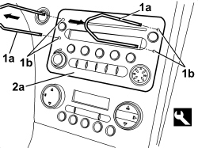

5570T80 CAR RADIO EQUIPMENT - R+R
- Path
- Procedures > 55 ELECTRICAL EQUIPMENT > 5570 ACCESSORIES > 5570T CAR RADIO AND CAR TELEPHONE > 5570T80 CAR RADIO EQUIPMENT - R+R
- Kind
- repair procedure (removal / refitting; the operation number is the code)
- Applies to
- all engines; all production periods
- Interactive page
- https://sloeber94.github.io/elrnDB/alfa/159/en/#/939011077
Applies to: all engines; all production periods
 Removing
Removing
 Refitting
Refitting1. Insert the tools (1a) fully in the openings (1b) in the radio.
Tool | Description | Function | Validity |
|---|---|---|---|
46515517 | Extractor | Radio extraction |
2. Grip the tools (1a) and, pushing them towards the outside and pulling them towards oneself, extract the radio (2a).

Applies to: all engines; all production periods
1. Disconnect the aerial connection.
2. Disconnect the electrical connections (2a, 2b, 2c).
Description | Component |
|---|---|
RADIO |
3. Keep the radio.

Applies to: all engines; all production periods
Refitting
Removing- Check that the radio is not damaged.
- Secure the electrical connections.
- Connect the aerial connection.
- Check that the radio and the speakers are working.
- Insert the radio in its housing taking care not to crush the electrical wires.
- Push the radio until it is fully inserted in place.
- Check that the radio and the speakers are working.
Topics linked from this page (1)
Topics that link to this page (42)
- N061 IRREGULAR OPERATION OF VOICE RECOGNITION
- N063 THE TELEPHONE AUDIO CANNOT BE HEARD
- N070 CONTROLS ON THE STEERING WHEEL NOT WORKING
- 5570TN BLUETOOTH LANGUAGE UPDATE PROCEDURE
- 5070TP BLUETOOTH SOFTWARE LANGUAGE UPDATE PROCEDURE
- 5010B24 UNDER-FACIA AIR DUCTS - R.R.
- 5010D40 PASSENGER COMPARTMENT AIR SENSOR FAN - R+R
- 5040C10 AIR CONDITIONING CASING - R.R
- 5040C50 AIR CONDITIONING HEATER RADIATOR - R.R.
- 5040C64 A/C EVAPORATOR - R+R
- 5040D18 AIR CONDITIONING CONTROL UNIT - R.R.
- 5040D80 AIR CONDITIONER SYSTEM WIRING BUNDLE - R R OR REPLACE
- 5040D86 AIR CONDITIONING RIGHT AIR MIXTURE FLAP CONTROL MOTOR - R.R
- 5040D94 AIR CONDITIONING LEFT UPPER AIR DISTRIBUTION FLAP MOTOR (DEFROST) - R.R
- 5040D96 AIR CONDITIONING RIGHT UPPER DISTRIBUTION FLAP MOTOR (DEFROST) - R.R
- 5505A31 ELECTRONIC KEY ACKNOWLEDGEMENT DEVICE - R. R.
- 5505C31 BUILT-IN WIRING UNDER DASHBOARD - R.R.
- 5505C41 PASSENGER COMPARTMENT WIRING - R.R
- 5520G30 START/STOP SWITCH FOR EASY-GO SYSTEM STARTER MOTOR - R.R.
- 5560C51 COMBINED ANALOGUE CONTROL PANEL - R+R OR REPLACE
- 5570T10 CAR RADIO SUPPORT - R+R - INCLUDES CONTACT REPAIR AND SUPPLY CIRCUIT CHECK
- 5570T32 LEAD FROM COAXIAL TO RADIO - R R
- 5570T49 BLUETOOTH ELECTRONIC CONTROL UNIT - R.R.
- 5580C22 AIR BAG MODULE - PASSENGER SIDE - R.R
- 5580C24 PASSENGER SIDE AIR BAG MODULE SUPPORT R. R.
- 7040A10 DASHBOARD TRIM - R+R
- 7040A17 AIR CONDITIONER CONTROLS
- 7210A74 R R FACIA SUPPORT BEAM
- E1050 CAN CONNECTION LINES - WIRING DIAGRAM
- E1050 CAN CONNECTION LINES - COMPONENT LOCATION
- E2535 CONTROLS LIGHTING - WIRING DIAGRAM
- E2535 CONTROLS LIGHTING - COMPONENT LOCATION
- E3510 RADIO - WIRING DIAGRAM
- E3510 RADIO - COMPONENT LOCATION
- E3510 RADIO - WIRING DIAGRAM
- E3510 RADIO - COMPONENT LOCATION
- E3510 RADIO - WIRING DIAGRAM
- E3510 RADIO - COMPONENT LOCATION
- E3570 INTEGRATED RADIOPHONE - WIRING DIAGRAM
- E3570 INTEGRATED RADIO PHONE - COMPONENT LOCATION
- E3580 PROVISION FOR CELL PHONE - WIRING DIAGRAM
- E3580 PROVISION FOR CELL PHONE - COMPONENT LOCATION